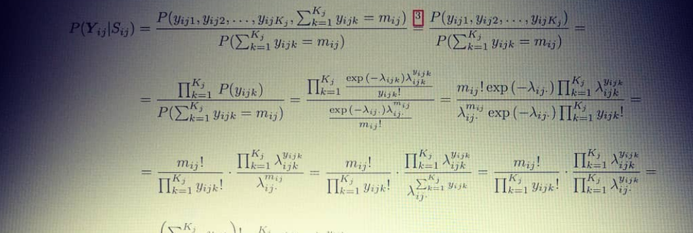

Publications

See publications at Google Scholar and PubMed.
ISGlobal/CREAL
Dadvand P, Basagaña X, Barrera-Gómez J, Diffey B, Nieuwenhuijsen M. Measurement errors in the assessment of exposure to solar ultraviolet radiation and its impact on risk estimates in epidemiological studies. Photochemical & Photobiological Sciences. 2011;10(7):1161-1168. doi:10.1039/C0PP00333F.
Basagaña X, Sartini C*, Barrera-Gómez J*, Dadvand P, Cunillera J, Ostro B, Sunyer J, Medina-Ramón M. Heat waves and cause-specific mortality at all ages. Epidemiology. 2011;22(6):765-772. doi:10.1097/EDE.0b013e31823031c5.
Ostro B, Barrera-Gómez J, Ballester J, Basagaña X, Sunyer J. The impact of future summer temperature on public health in Barcelona and Catalonia, Spain. International Journal of Biometeorology. 2012;56(6):1135-1144. doi:10.1007/s00484-012-0529-7.
Basagaña X, Barrera-Gómez J, Benet M, Antó JM, Garcia-Aymerich J. A framework for multiple imputation in cluster analysis. American Journal of Epidemiology. 2013;177(7):718-725. doi:10.1093/aje/kws289. Software.
Xu Y, Dadvand P, Barrera-Gómez J, Sartini C, Marí-Dell’Olmo M, Borrell C, Medina-Ramón M, Sunyer J, Basagaña X. Differences on the effect of heat waves on mortality by socio-demographic and urban landscape characteristics. Journal of Epidemiology & Community Health. 2013;67(6):519-525. doi:10.1136/jech-2012-201899.
Samoli E, Stafoggia M, Rodopoulou S, Ostro B, Declercq C, Alessandrini E, Díaz J, Karanasiou A, Kelessis AG, Le Tertre A, Pandolfi P, Randi G, Scarinzi C, Zauli-Sajani S, Katsouyanni K, Forastiere F; MED-PARTICLES Study Group (…, Barrera-Gómez J, …). Associations between fine and coarse particles and mortality in Mediterranean cities: results from the MED-PARTICLES project. Environmental Health Perspectives. 2013;121(8):932-938. doi: 10.1289/ehp.1206124.
Barrera-Gómez J, Spiegelman D, Basagaña X. Optimal combination of number of participants and number of repeated measurements in longitudinal studies with time-varying exposure. Statistics in Medicine. 2013;32(27):4748-4762. doi:10.1002/sim.5870. Software.
Stafoggia M, Samoli E, Alessandrini E, Cadum E, Ostro B, Berti G, Faustini A, Jacquemin B, Linares C, Pascal M, Randi G, Ranzi A, Stivanello E, Forastiere F; MED-PARTICLES Study Group (…, Barrera-Gómez J, …). Short-term associations between fine and coarse particulate matter and hospitalizations in Southern Europe: results from the MED-PARTICLES project. Environmental Health Perspectives. 2013;121(9):1026-1033. doi:10.1289/ehp.1206151.
Samoli E, Stafoggia M, Rodopoulou S, Ostro B, Alessandrini E, Basagaña X, Díaz J, Faustini A, Gandini M, Karanasiou A, Kelessis AG, Le Tertre A, Linares C, Ranzi A, Scarinzi C, Katsouyanni K, Forastiere F; MED-PARTICLES Study Group (…, Barrera-Gómez J, …). Which specific causes of death are associated with short term exposure to fine and coarse particles in Southern Europe? Results from the MED-PARTICLES project. Environment International. 2014;67:54-61. doi:10.1016/j.envint.2014.02.013.
Karanasiou A, Querol X, Alastuey A, Perez N, Pey J, Perrino C, Berti G, Gandini M, Poluzzi V, Ferrari S, de la Rosa J, Pascal M, Samoli E, Kelessis A, Sunyer J, Alessandrini E, Stafoggia M, Forastiere F; MED-PARTICLES Study Group (…, Barrera-Gómez J, …). Particulate matter and gaseous pollutants in the Mediterranean Basin: Results from the MED-PARTICLES project. Science of The Total Environment. 2014;488-489:297-315. doi:10.1016/j.scitotenv.2014.04.096.
Ostro B, Tobias A, Karanasiou A, Samoli E, Querol X, Rodopoulou S, Basagaña X, Eleftheriadis K, Diapouli E, Vratolis S, Jacquemin B, Katsouyanni K, Sunyer J, Forastiere F, Stafoggia M; and the MED-PARTICLES Study Group (…, Barrera-Gómez J, …). The risks of acute exposure to black carbon in Southern Europe: Results from the MED-PARTICLES project. Occupational and Environmental Medicine. 2014;72(2):123-129. doi:10.1136/oemed-2014-102184.
Basagaña X, Jacquemin B, Karanasiou A, Ostro B, Querol X, Agis D, Alessandrini E, Alguacil J, Artiñano B, Catrambone M, de la Rosa JD, Díaz J, Faustini A, Ferrari S, Forastiere F, Katsouyanni K, Linares C, Perrino C, Ranzi A, Ricciardelli I, Samoli E, Zauli-Sajani S, Sunyer J, Stafoggia M; on behalf of the MED-PARTICLES Study group (…, Barrera-Gómez J, …). Short-term effects of particulate matter constituents on daily hospitalizations and mortality in five South-European cities: Results from the MED-PARTICLES project. Environment International. 2015;75:151-158. doi:10.1016/j.envint.2014.11.011.
Barrera-Gómez J, Basagaña X. Models with transformed variables: Interpretation and software. Epidemiology. 2015;26(2):e16-17. doi:10.1097/EDE.0000000000000247. Software
Faustini A, Alessandrini ER, Pey J, Perez N, Samoli E, Querol X, Cadum E, Perrino C, Ostro B, Ranzi A, Sunyer J, Stafoggia M, Forastiere F; MED-PARTICLES study group (…, Barrera-Gómez J, …). Short-term effects of particulate matter on mortality during forest fires in Southern Europe: Results of the MED-PARTICLES Project. Occupational and Environmental Medicine. 2015;72(5):323-329. doi:10.1136/oemed-2014-102459.
Basagaña X, Escalera-Antenaza JP, Dadvand P, Llatje Ò, Barrera-Gómez J, Cunillera J, Medina-Ramón M, Pérez K. High ambient temperatures and risk motor vehicle crashes in Catalonia, Spain (2000-2011): A time-series analysis. Environmental Health Perspectives. 2015;123(12):1309-1316. doi:10.1289/ehp.1409223.
Stafoggia M, Zauli-Sajani S, Pey J, Samoli E, Alessandrini E, Basagaña X, Cernigliaro A, Chiusolo M, Demaria M, Díaz J, Faustini A, Katsouyanni K, Kelessis AG, Linares C, Marchesi S, Medina S, Pandolfi P, Pérez N, Querol X, Randi G, Ranzi A, Tobias A, Forastiere F; MED-PARTICLES Study Group (…, Barrera-Gómez J, …). Desert dust outbreaks in Southern Europe: Contribution to daily PM10 concentrations and short-term associations with mortality and hospital admissions. Environmental Health Perspectives. 2016;124(4):413-419. doi:10.1289/ehp.1409164.
de Keijzer C, Agis D, Ambrós A, Arévalo G, Baldasano JM, Bande S, Barrera-Gómez J, Benach J, Cirach M, Dadvand P, Ghigo S, Martinez-Solanas È, Nieuwenhuijsen M, Cadum E, Basagaña X, on behalf of the MED-HISS Study group. The association of air pollution and greenness with mortality and life expectancy in Spain: A small-area study. Environmental Health Perspectives. 2017;99:170-176. doi:10.1016/j.envint.2016.11.009.
Barrera-Gómez J, Agier L, Portengen L, Chadeau-Hyam M, Giorgis-Allemand L, Siroux V, Robinson O, Vlaanderen J, González JR, Nieuwenhuijsen M, Vineis P, Vrijheid M, Vermeulen R, Slama R, Basagaña X. A systematic comparison of statistical methods to detect interactions in exposome-health associations. Environmental Health. 2017; 16(1):74. doi:10.1186/s12940-017-0277-6.
Ghigo S, Bande S, Ciancarella L, Mircea M, Piersanti A, Righini G, Baldasano JM, Basagaña X, Cadum E; on behalf of the MED HISS Study group (…, Barrera-Gómez J, …). Mapping air pollutants at municipality level in Italy and Spain in support to health impact evaluations. Air Quality, Atmosphere & Health. 2017; 11(1):69-82. doi:10.1007/s11869-017-0520-x.
Curto A, Donaire-Gonzalez D, Barrera-Gómez J, Marshall MJ, Nieuwenhuijsen MJ, Wellenius GA, Tonne C. Performance of low-cost monitors to assess household air pollution. Environmental Research. 2018;163:53-63. doi:10.1016/j.envres.2018.01.024.
Basagaña X, Pedersen M, Barrera-Gómez J, Gehring U, Giorgis-Allemand L, Hoek G, Stafoggia M, Nieuwenhuijsen M, Brunekreef B, Slama R, ESCAPE Birth Outcomes working group. Analysis of multicentre epidemiological studies: contrasting fixed or random effects modelling and meta-analysis. International Journal of Epidemiology. 2018;47(4):1343-1354. doi:10.1093/ije/dyy117.
de Bont J, Casas M, Barrera-Gómez J, Cirach M, Rivas I, Valvi D, Álvarez M, Dadvand P, Sunyer J, Vrijheid M. Ambient air pollution and overweight and obesity in school-aged children in Barcelona, Spain. Environment International. 2019;125:58-64. doi:10.1016/j.envint.2019.01.048.
Triguero-Mas M, Martínez-Solanas E, Barrera-Gómez J, Agis D, Pérez N, Reche C, Alastuey A, Querol X, Pérez K, Basagaña X. Public transport strikes and their relationship with air pollution, mortality and hospital admissions. American Journal of Epidemiology. 2020;189(2):116-119. doi:10.1093/aje/kwz202.
Triebner K, Bifulco E, Barrera-Gómez J, Basagaña X, Benediktsdóttir B, Forsberg B, Franklin KA, Garcia-Larsen V, Leynaert B, Lindberg E, Martínez-Moratalla J, Muniozguren-Agirre N, Pin I, Raherison C, Pereira-Vega A, Schlünssen V, Valentin A, Hustad S, Gómez Real F, Dadvand P. Ultraviolet radiation as a predictor of sex hormones in postmenopausal women: A European multi-center study (ECRHS). Maturitas. 2021;145:49-55. doi:10.1016/j.maturitas.2021.12.011.
Khomenko S, Cirach M, Pereira-Barboza E, Mueller N, Barrera-Gómez J, Rojas-Rueda D, de Hoogh K, Hoek G, Nieuwenhuijsen M. Premature mortality due to air pollution in European cities: a health impact assessment. The Lancet Planetary Health. 2021;5(3):e121:e134. doi:10.1016/S2542-5196(20)30272-2.
Ho JY, Zijlema WL, Triguero-Mas M, Donaire-Gonzalez D, Valentín A, Ballester J, Chan EYY, Goggins WB, Mo PKH, Kruize H, van den Berg M, Gražulevicien R, Gidlow CJ, Jerrett M, Seto EYW, Barrera-Gómez J*, Nieuwenhuijsen MJ*. Does surrounding greenness moderate the relationship between apparent temperature and physical activity? Findings from the PHENOTYPE project. Environmental Research. 2021 ;197:110992. doi:10.1016/j.envres.2021.110992.
Gignac F, Barrera-Gómez J, Persavento C, Solé C, Tena È, López-Vicente M, Foraster M, Amato F, Alastuey A, Querol X, Llavador H, Apesteguia J, Júlvez J, Couso D, Sunyer J, Basagaña X. Short-term effect of air pollution on attention function in adolescents (ATENC!Ó): A randomized controlled trial in high schools in Barcelona, Spain. Environment International. 2021;156:106614. doi:10.1016/j.envint.2021.106614.
Julvez J, Gignac F, Fernandez Barres S, Romaguera D, Sala-Vila A, Ranzani OT, Persavento C, Delgado A, Carol A, Torrent J, Gonzalez J, Roso E, Barrera-Gómez J, López-Vicente M, Garcia-Esteban R, Boucher O, Forns J, Burgaleta M, Sebastian-Galles N, Canals J, Arija V, Basagaña X, Ros E, Vendrell J, Salas-Salvado J, Sunyer J. Walnuts, long-chain polyunsaturated fatty acids and adolescent brain development: Protocol for the Walnuts Smart Snack (WSS) dietary intervention trial. Frontiers in Pediatrics. 2021;9:425. doi:10.3389/fped.2021.593847.
Gallego-Paüls M, Hernández-Ferrer C, Bustamante M, Basagaña X, Barrera-Gómez J, Lau C-HE, Siskos AP, Vives-Usano M, Ruiz-Arenas C, Wright J, Slama R, Heude B, Casas M, Grazuleviciene R, Chatzi L, Borràs E, Sabidó E, Carracedo Á, Estivill X, Urquiza J, Coen M, Keun HC, González JR, Vrijheid M, Maitre L. Variability of multi-omics profiles in a population-based child cohort. BMC Medicine. 2021;19(166). doi:10.1186/s12916-021-02027-z.
Gignac F, Solé C, Barrera-Gómez J, Persavento C, Tena E, López-Vicente M, Júlvez J, Sunyer J, Couso D, Basagaña X. Identifying factors influencing attention in adolescents with a co-created questionnaire: A citizen science approach with secondary students in Barcelona, Spain. International Journal of Environmental Research and Public Health. 2021;18(15):8221. doi:10.3390/ijerph18158221.
Pereira Barboza E, Cirach M, Khomenko S, Iungman T, Mueller N, Barrera-Gómez J, Rojas-Rueda D, Kondo M, Nieuwenhuijsen M. Green space and mortality in European cities: A health impact assessment study. The Lancet Planetary Health. 2021;5(10):e718-e730. doi:10.1016/S2542-5196(21)00229-1.
Khomenko S, Cirach M, Pereira-Barboza E, Mueller N, Barrera-Gómez J, Rojas-Rueda D, de Hoogh K, Hoek G, Nieuwenhuijsen M. Health impacts of the new WHO air quality guidelines in European cities. The Lancet Planetary Health. 2021;5(11):E764. doi:10.1016/S2542-5196(21)00288-6.
Soueid L, Triguero-Mas M, Dalmau A, Barrera-Gómez J, Alonso L, Basagaña X, Thieden E, Wulf HC, Diffey B, Young AR, Nieuwenhuijsen M, Dadvand P. Estimating personal ultraviolet radiation exposure through time spent outdoors, ambient levels and modelling approaches. British Journal of Dermatology. 2022;186(2):266-273. doi: 10.1111/bjd.20703.
Nieuwenhuijsen M, Barrera-Gómez J, Basagaña X, Cirach M, Daher C, Foraster M, Iungman T, Gasparrini A, Hoek G, de Hoogh K, Khomenko S, Khreis H, de Nazelle A, Ramos A, Rojas-Rueda D, Pereira Barboza E, Tainio M, Thondoo M, Tonne C, Woodcock J, Mueller N. Study protocol of the European Urban Burden of Disease Project: A health impact assessment study. BMJ Open. 2022;12:e054270. doi:10.1136/bmjopen-2021-054270.
Basagaña X, Barrera-Gómez J. Reflection on modern methods: Visualizing the effects of collinearity in distributed lag models. International Journal of Epidemiology. 2022;51(1):334-344. doi:10.1093/ije/dyab179. Software
Khomenko S, Cirach M, Barrera-Gómez J, Pereira Barboza E, Iungman T, Mueller N, Foraster M, Tonne C, Thondoo M, Jephcote C, Gulliver J, Woodcock J, Nieuwenhuijsen M. Impact of road traffic noise on annoyance and preventable mortality in European cities: A health impact assessment. Environment International. 2022;162:107160. doi:10.1016/j.envint.2022.107160.
Pinar-Martí A, Gignac F, Fernández-Barrés S, Romaguera D, Sala-Vila A, Lázaro I, Ranzani OT, Persavento C, Delgado A, Carol A, Torrent J, Gonzalez J, Roso E, Barrera-Gómez J, Lopez-Vicente M, Boucher O, Nieuwenhuijsen M, Turner M, Burgaleta M, Canals J, Arija V, Basagaña X, Ros E, Salas-Salvadó J, Sunyer J, Julvez J. Effect of walnut consumption on neuropsychological development in healthy adolescents: A multi-school randomized controlled trial. eClinicalMedicine. 2023;59:101954. doi:10.1016/j.eclinm.2023.101954.
Barrera-Gómez J, Puig X, Ginebra J, Basagaña X. Conditional Poisson regression with random effects for the analysis of multi-site time series studies. Epidemiology. 2023;34(6):873-878. doi:10.1097/EDE.0000000000001664.
Other collaborations
Barrera-Gómez J. Anàlisi dels factors associats a l’assoliment d’algunes competències bàsiques en l’àrea de matemàtiques: Una proposta de millora en la connexió curricular en la transició primària-secundària. Generalitat de Catalunya. Departament d’Educació, 2009. Barcelona. This was a one year grant (2008-2009 academic year) by the Education Department of the Catalan Government for the project.
Llobet B, López-Ros V, Barrera-Gómez J, Comino J. Assessing novices’ game performance in rugby union: the Rugby Attack Assessment Instrument (RAAI). Journal of Teaching in Physical Education. 2016;35(2):181-186. doi:10.1123/jtpe.2014-1034. Software
Herreros A, Perez-Calatayud J, Ballester F, Barrera-Gómez J, Abellana R, Melo J, Moutinho L, Tagliaferri L, Rovirosa Á. In vivo verification of treatment source dwell times in brachytherapy of postoperative endometrial carcinoma. Journal of Personalized Medicine. 2022;12(6):911. doi:10.3390/jpm12060911.